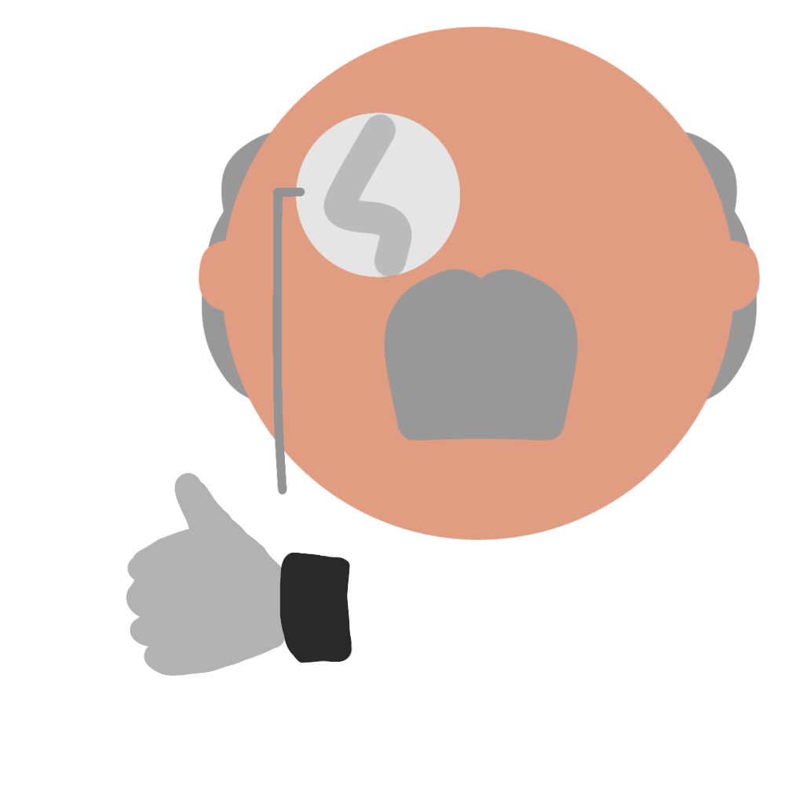

Criadores
Este é um site produzido pelo aluno do Curso Técnico Integrado de Informática, do Cefet-MG, Gabriel Damasceno.
É um trabalho prático da disciplina de Laboratório de Programação para Web, ministrada pelo professor Daniel Hasan. Professor, esse, que merece, também, os devidos créditos deste site, pois, além de ensinar o conteúdo, nos ajudou durante todo o processo.
Aproveite este projeto, visto que ele foi desenvolvido para auxiliar à nós, estudantes, na nossa jornada acadêmica.
